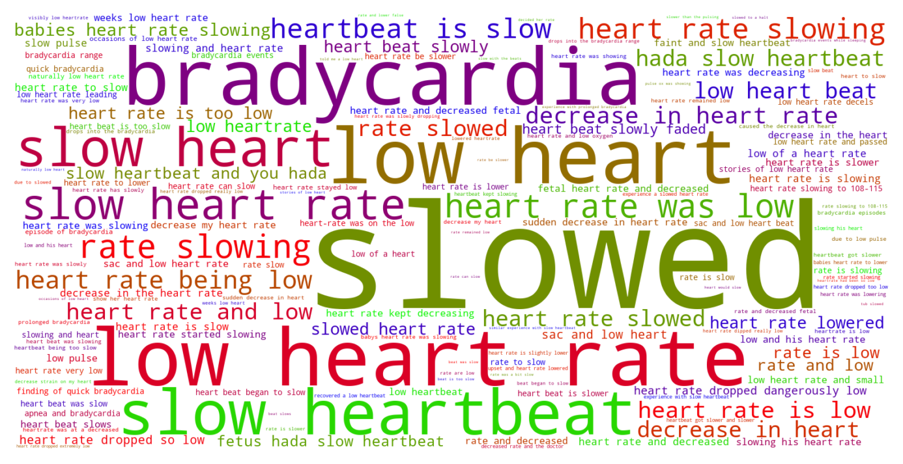
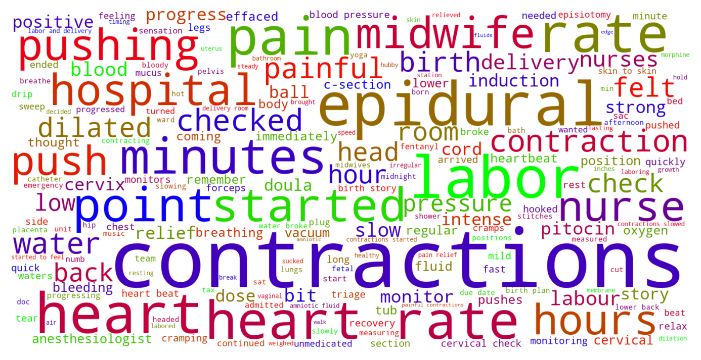

Jump to section:
Samples from Social CorpusHits per UMLS Alias on Social Corpus
Word Cloud Comparison
Embedding Space Comparison
Nearest Neighbors by Semantic Type
Related Analysed Concepts
Samples from Social Corpus
Everything went from joy to tunnel vision and almost like the doctors speech slowed down and became nearly inaudible in blur .
Confidence: 0.707. Reddit link
The baby was not in distress and the bleeding had slowed down so I was cleared to return to the birth center but we decided to stay at the hospital since everything was so weird .
Confidence: 0.707. Reddit link
But by the time we got home , they had slowed way down 😡 After a night of no sleep , I got up to worse but extremely irregular contractions on Saturday .
Confidence: 0.707. Reddit link
Around 11 , I mentioned to the nurse that I might be ready for an epidural soon , and she urged me to stick it out as long as I could just in case the epidural slowed our progress .
Confidence: 0.707. Reddit link
My dilation kind of slowed down , and the doctor on call had me on pitocin to move things along .
Confidence: 0.707. Reddit link
I'm overweight from being hypo ( I eat completely clean and exercise when I can !!!) so I'm definitely not an athlete who should be having that low of a heart rate .
Confidence: 1.000. Reddit link
My nurse came in the room around 4:30 concerned about his low heart rate , so she paged another nurse to come look at the monitor with her .
Confidence: 1.000. Reddit link
This was not at all my understanding - I thought it was more accurate ( both detection rate and lower false positive rate ) regardless of age .
Confidence: 0.601. Reddit link
My son ( almost 6 months ) is breast fed and has always been a prolific pooper ( multiple times a day ) , but since starting veggie purees a few weeks ago , it's slowed way down to every few days .
Confidence: 0.707. Reddit link
And whether the pit caused the rapid descent that was attributed to the episode of bradycardia ( the heart rate nose diving ) .
Confidence: 0.761. Reddit link
Hits per UMLS Alias on Social Corpus
-
pulse slowed
203 hits
-
low heart rate
87 hits
-
slow heartbeat
25 hits
-
heart rate slow
25 hits
-
slow heart beat
24 hits
-
bradycardia
23 hits
-
heart rate slowing
23 hits
-
decreased heart rate
14 hits
-
heart rate decreased
6 hits
-
pulse rate low
6 hits
-
slow heart rate
4 hits
-
slow pulse
3 hits
-
decreasing heart rate
2 hits
-
pulse slowing
2 hits
-
low pulse rate
1 hits
-
bradycardia finding
1 hits
-
slow heartbeats
1 hits
-
pulse rate decrease
0 hits
-
cardiac arrhythmia bradycardia
0 hits
-
bradycardias
0 hits
-
bradyarrhythmia
0 hits
-
bradyarrhythmias
0 hits
-
brachycardia
0 hits
-
pulse slow
0 hits
-
bradycardia nos
0 hits
-
low pulse rates
0 hits
Word Cloud Comparison
Keywords matching C0428977
Keywords matched against concept. Word size represents frequency.
Keywords co-occurring with C0428977
Co-occurrence is measured at the document-level (i.e. Reddit submissions). Frequencies are normalized to account for keywords common to all CUIs.
Embedding Space Comparison
T-SNE comparison for word embeddings learned from medical domain (EuroPMC) and social media (Reddit) independently.
Pearson correlation for union of closest 1000 neighbors: -0.036
Nearest Neighbors by Semantic Type
Most similar concepts in each of the selected UMLS semantic types. Based on concept embeddings from social corpus.
T184 (Sign or Symptom)
-
C0423636
Heart pain
0.795 Similarity
-
C0233565
Slow movements
0.714 Similarity
-
C0235240
Heart pounding
0.695 Similarity
-
C0565619
Fetal distress labor
0.687 Similarity
-
C0235239
Heart fluttering
0.687 Similarity
-
C0795691
Heart problem
0.678 Similarity
-
C0024031
Lower back pain
0.674 Similarity
-
C0920289
Sluggishness
0.670 Similarity
T201 (Clinical Attribute)
-
C0018810
Heart rate
0.789 Similarity
-
C0007165
Heart output
0.712 Similarity
-
C1997846
Heart rate recovery time
0.657 Similarity
-
C1285995
Measure uterine contractions
0.654 Similarity
-
C0429622
Oxygen supply
0.636 Similarity
-
C1275644
Reading add
0.635 Similarity
-
C0231832
Breathing rate
0.635 Similarity
-
C0035234
Breathing sound
0.630 Similarity
T047 (Disease or Syndrome)
-
C0003811
Arrhythmia
0.785 Similarity
-
C0033036
Atrial premature contractions
0.712 Similarity
-
C0031039
Fluid around heart
0.701 Similarity
-
C0206145
Myocardium stunned
0.697 Similarity
-
C0018801
Heart failure
0.694 Similarity
-
C0013384
Abnormal movements
0.686 Similarity
-
C0340464
Extrasystoles
0.674 Similarity
-
C0018799
Heart trouble
0.662 Similarity
T042 (Organ or Tissue Function)
-
C0425583
Heartbeat
0.777 Similarity
-
C0018820
Heart sound
0.714 Similarity
-
C0027045
Heart beating
0.711 Similarity
-
C1959585
Heart rate control
0.662 Similarity
-
C1749797
Heart development
0.615 Similarity
-
C0231940
Oxygenation
0.595 Similarity
-
C0032058
Placentation
0.593 Similarity
-
C0232102
Blood fluidity
0.589 Similarity
T061 (Therapeutic or Preventive Procedure)
-
C0545508
Pulse taking other
0.768 Similarity
-
C0588436
Monitored self
0.669 Similarity
-
C1301849
Uterine contraction monitor
0.668 Similarity
-
C1314130
Blood measuring pressure
0.654 Similarity
-
C1260866
Blood oxygenator
0.628 Similarity
-
C0565239
Atrial overdrive pacing
0.626 Similarity
-
C0018823
Heart transplant
0.616 Similarity
-
C0242835
Reduction fetal
0.615 Similarity
T060 (Diagnostic Procedure)
-
C2500064
Heart scan
0.756 Similarity
-
C0150496
Heart monitoring
0.750 Similarity
-
C0199637
Heart rate monitoring
0.746 Similarity
-
C4529960
Heart test
0.712 Similarity
-
C0278336
Fetal ecg
0.684 Similarity
-
C0013516
Heart ultrasound
0.682 Similarity
-
C0203428
Fetal us scan
0.682 Similarity
-
C0842481
Fetal monitor internal
0.676 Similarity
T018 (Embryonic Structure)
-
C0015935
Fetal heart
0.744 Similarity
-
C0440731
Fetal brain
0.671 Similarity
-
C0015965
Fetal
0.630 Similarity
-
C0553522
Cord placenta umbilical
0.573 Similarity
-
C0231024
Neural tube
0.548 Similarity
-
C0032043
Placenta
0.540 Similarity
-
C1278988
Entire placenta
0.537 Similarity
-
C0008508
Chorionic villi
0.533 Similarity
T074 (Medical Device)
-
C0180647
Internal fetal heart rate monitoring
0.726 Similarity
-
C0182109
Pulse oximeter
0.714 Similarity
-
C0180849
Fetal monitors
0.687 Similarity
-
C3872996
Fetal doppler system
0.684 Similarity
-
C0182130
Oxygen monitors
0.674 Similarity
-
C0179350
Blood gas monitor
0.657 Similarity
-
C3878737
Uternine contraction monitor internal
0.657 Similarity
-
C0005825
Blood pressure monitor
0.647 Similarity
T023 (Body Part, Organ, or Organ Component)
-
C0729936
Heart chambers
0.721 Similarity
-
C0018787
Heart
0.718 Similarity
-
C1268110
Heart part
0.716 Similarity
-
C1882687
Rat heart
0.675 Similarity
-
C0446987
Heart wall
0.659 Similarity
-
C0018827
Ventricle
0.639 Similarity
-
C1268088
Lower body
0.626 Similarity
-
C1518646
Other body part
0.620 Similarity
T039 (Physiologic Function)
-
C2256369
Heart process
0.712 Similarity
-
C0743925
Fetal growth
0.644 Similarity
-
C0232338
Blood flow
0.626 Similarity
-
C0232851
Flow urine
0.567 Similarity
-
C0015413
Eye movements
0.564 Similarity
-
C0035203
Ventilation
0.560 Similarity
-
C0018767
Hear
0.558 Similarity
-
C0234886
Lowing
0.552 Similarity
T019 (Congenital Abnormality)
-
C0018798
Heart defect
0.678 Similarity
-
C0266383
Abnormality uterus
0.636 Similarity
-
C0000768
Birth defect
0.604 Similarity
-
C0266387
Bicornuate uterus
0.589 Similarity
-
C0265715
Heart shaped pelvis
0.587 Similarity
-
C0152424
Single ventricle
0.581 Similarity
-
C0152240
Septate uterus
0.574 Similarity
-
C1384670
Single umbilical artery
0.571 Similarity
T046 (Pathologic Function)
-
C0015930
Fetal distress
0.672 Similarity
-
C0036980
Heart shocking
0.669 Similarity
-
C0015927
Iud
0.654 Similarity
-
C0151686
Decreased growth
0.648 Similarity
-
C1458140
Abnormal bleeding
0.646 Similarity
-
C1306893
Placental issue
0.636 Similarity
-
C0242184
Decreased oxygen supply
0.632 Similarity
-
C0015959
Fetal maternal bleed
0.627 Similarity
T190 (Anatomical Abnormality)
-
C4025734
Anomaly scalp
0.666 Similarity
-
C4732742
Hole center heart
0.644 Similarity
-
C0266785
Umbilical cord issue
0.592 Similarity
-
C0332482
Distortion
0.588 Similarity
-
C0302142
Anatomic abnormality
0.585 Similarity
-
C0269185
Tipped uterus
0.581 Similarity
-
C4025319
Head stopped growing
0.570 Similarity
-
C0332447
Anomaly
0.541 Similarity
T079 (Temporal Concept)
-
C4329756
During this bowel movement
0.659 Similarity
-
C0449249
Growth rate
0.635 Similarity
-
C0039155
Systolic
0.607 Similarity
-
C2985337
Relaxation time between uterine contractions
0.605 Similarity
-
C0439606
Pulsating
0.571 Similarity
-
C0585332
Every other week
0.571 Similarity
-
C0558293
Once week
0.570 Similarity
-
C1550731
Week continuous
0.565 Similarity
T049 (Cell or Molecular Dysfunction)
-
C4725191
Stop lost
0.657 Similarity
-
C0544885
Stop gain
0.589 Similarity
-
C0008625
Chromosomal abnormality
0.559 Similarity
-
C4725190
Start lost
0.546 Similarity
-
C0040715
Translocation
0.504 Similarity
-
C1705285
Mutated
0.496 Similarity
-
C0008628
Del
0.495 Similarity
-
C0333714
Reciprocal translocation
0.481 Similarity
T032 (Organism Attribute)
-
C0575118
Normal posture
0.653 Similarity
-
C0751992
Fetal weight
0.635 Similarity
-
C0005890
Stature
0.574 Similarity
-
C0017504
Gestational age
0.569 Similarity
-
C0805393
Breathing spontaneous
0.555 Similarity
-
C4704805
Trajectory weight
0.550 Similarity
-
C0005612
Weight baby
0.537 Similarity
-
C0005885
Body composition
0.536 Similarity
T044 (Molecular Function)
-
C0369768
Oxygen saturation
0.649 Similarity
-
C1150342
Dopachrome rearranging enzyme
0.548 Similarity
-
C1149397
Heartless ligand
0.532 Similarity
-
C1749457
Ligands activity
0.519 Similarity
-
C0887940
Gene arrangements
0.478 Similarity
-
C1721104
Breaks dna
0.469 Similarity
-
C1148613
Binding iron
0.461 Similarity
-
C1149528
Wishful thinking binding
0.448 Similarity
T067 (Phenomenon or Process)
-
C1947910
Pulsed
0.646 Similarity
-
C0677038
Increase pressure
0.638 Similarity
-
C0000894
Accelerations
0.627 Similarity
-
C5197751
Sea level rise
0.571 Similarity
-
C0563547
Pressure change
0.540 Similarity
-
C0337240
Fall while being carried
0.530 Similarity
-
C0033095
Pressure
0.517 Similarity
-
C0870861
Grow up
0.508 Similarity
T059 (Laboratory Procedure)
-
C0005771
Blood cell count
0.632 Similarity
-
C0014772
Counting rbc
0.627 Similarity
-
C0368930
Clotting time
0.622 Similarity
-
C1295143
Fetal fibronectin test
0.590 Similarity
-
C0545131
Cbc diff
0.583 Similarity
-
C0005729
Bleeding time
0.583 Similarity
-
C0009555
Full blood count
0.581 Similarity
-
C0200633
Seg blood count
0.573 Similarity
T034 (Laboratory or Test Result)
-
C0580945
Blood pressure standing
0.616 Similarity
-
C0580944
Lying blood pressure
0.606 Similarity
-
C0588465
Sperm forward progression
0.590 Similarity
-
C2266672
Clotting time finding
0.589 Similarity
-
C1299966
Ultrasound finding
0.587 Similarity
-
C0241988
M spike
0.574 Similarity
-
C3898879
Triple positive
0.571 Similarity
-
C5201036
Low platelets
0.568 Similarity
T048 (Mental or Behavioral Dysfunction)
-
C0003537
Losing words
0.609 Similarity
-
C0233469
Emotional blunting
0.583 Similarity
-
C0547006
Anxiety about blushing
0.567 Similarity
-
C0393760
Trouble falling asleep
0.567 Similarity
-
C0563172
Dangerous plans
0.566 Similarity
-
C0010598
Affective personality
0.553 Similarity
-
C0085633
Mood swings
0.543 Similarity
-
C0241210
Speech delay
0.534 Similarity
T031 (Body Substance)
-
C0162371
Cord blood
0.603 Similarity
-
C0392908
Secretion vaginal
0.559 Similarity
-
C1253943
Fluid chest
0.558 Similarity
-
C3496630
Swab from uterus
0.556 Similarity
-
C0439057
Early morning urine
0.548 Similarity
-
C3532405
Swab from placenta
0.534 Similarity
-
C0005767
Blood
0.521 Similarity
-
C0007806
Spinal fluid
0.516 Similarity
T054 (Social Behavior)
-
C0868443
Beating
0.597 Similarity
-
C0683557
Acting as sounding board
0.548 Similarity
-
C0680208
Unconnected
0.544 Similarity
-
C0582101
Talking about dying
0.543 Similarity
-
C0422386
Patient suing doctor finding
0.540 Similarity
-
C0028658
Nurse patient
0.523 Similarity
-
C0019421
Straight
0.498 Similarity
-
C0021797
Relations with other people
0.494 Similarity
T037 (Injury or Poisoning)
-
C1997329
Fall from high place
0.569 Similarity
-
C0392012
Crushing abdomen
0.550 Similarity
-
C0269271
Bleeding from breast
0.541 Similarity
-
C0686721
Baby shaken
0.541 Similarity
-
C0417059
Fall into well
0.537 Similarity
-
C1959898
Traumatic injury during pregnancy
0.532 Similarity
-
C0269858
Traumatic lesion during delivery
0.524 Similarity
-
C0417069
Fall into pit
0.515 Similarity
T041 (Mental Process)
-
C0025361
Thought process
0.555 Similarity
-
C0814069
Visual spatial ability
0.544 Similarity
-
C0564404
Stressed out
0.544 Similarity
-
C0043012
Vigilant
0.543 Similarity
-
C0004309
Listening
0.530 Similarity
-
C0582591
Processing speed
0.528 Similarity
-
C0424157
Fear going crazy
0.528 Similarity
-
C0679114
Intense emotion
0.525 Similarity
T200 (Clinical Drug)
-
C3218395
Papain pill
0.542 Similarity
-
C3216620
Progesterone vaginal product
0.531 Similarity
-
C0307304
Pitocin injection
0.485 Similarity
-
C1247687
Progesterone suppositories vaginal
0.484 Similarity
-
C4048176
Oxytocin injection
0.470 Similarity
-
C5222490
Progesterone injection
0.464 Similarity
-
C1247002
Misoprostol oral tablet
0.447 Similarity
-
C0723917
Triple antibiotic ointment
0.439 Similarity
T101 (Patient or Disabled Group)
-
C0520954
Fast learner
0.539 Similarity
-
C0233363
Monoamniotic twins
0.532 Similarity
-
C0871503
Dying patients
0.481 Similarity
-
C0242798
Shut
0.478 Similarity
-
C0525064
Deaf
0.456 Similarity
-
C0682161
Dually diagnosed
0.455 Similarity
-
C0002695
Amputee
0.447 Similarity
-
C3242735
Differently abled
0.443 Similarity
T007 (Bacterium)
-
C1015849
Wigglesworthia
0.533 Similarity
-
C0018154
Gram positive bacteria
0.480 Similarity
-
C0022828
L forms
0.434 Similarity
-
C0995648
Genus quinella
0.428 Similarity
-
C2312288
Sharpea
0.399 Similarity
-
C1016530
Hallella
0.396 Similarity
-
C4169658
Convivina
0.396 Similarity
-
C0995705
Frankia
0.369 Similarity
T100 (Age Group)
-
C4048294
Preterm baby
0.533 Similarity
-
C3494262
Extremely preterm infant
0.530 Similarity
-
C4551581
Full term baby
0.472 Similarity
-
C0021289
Newborn
0.431 Similarity
-
C0682054
Mature adult
0.425 Similarity
-
C0596728
65 years old
0.410 Similarity
-
C3825962
Middle aged women
0.386 Similarity
-
C0920381
1 year old
0.383 Similarity
T005 (Virus)
-
C3743464
Mycobacteriophage whirlwind
0.531 Similarity
-
C1220459
Hart park group
0.499 Similarity
-
C3768023
Mycobacteriophage conspiracy
0.485 Similarity
-
C4415400
Phage wrath
0.467 Similarity
-
C0597404
Respiratory virus
0.417 Similarity
-
C5058350
Fairfax lookout virus
0.413 Similarity
-
C3949524
Mischivirus
0.401 Similarity
-
C0205939
Cold virus common
0.397 Similarity
T195 (Antibiotic)
-
C0723285
Septa
0.468 Similarity
-
C0310367
Today
0.446 Similarity
-
C0003232
Antibiotics
0.396 Similarity
-
C0076686
Timentin
0.364 Similarity
-
C0718575
Antibiotics ear
0.350 Similarity
-
C0013090
Doxycycline
0.334 Similarity
-
C0030842
Penicillin
0.307 Similarity
-
C4087029
Nice
0.305 Similarity